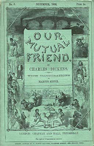

Having made his fortune from London's rubbish, a rich misanthropic miser dies, estranged from all except his faithful employees Mr and Mrs Boffin. By his will, his fortune goes to his estranged son John Harmon, who is to return from where he has settled abroad (possibly in South Africa) to claim it, on condition that he marries a woman he has never met, Miss Bella Wilfer. The implementation of the will is in the charge of the solicitor, Mortimer Lightwood, who has no other practice.
The son and heir does not appear, though some knew him aboard the ship to London. A body is found in the Thames by Gaffer Hexam, rowed by his daughter Lizzie. He is a waterman who makes his living by retrieving corpses and taking the cash in their pockets, before handing them over to the authorities. Papers in the pockets of the drowned man identify him as the heir, John Harmon. Present at the identification of the water-soaked corpse is a mysterious young man, who gives his name as Julius Handford and then disappears.
By the terms of the miser's will, the whole estate then devolves upon Mr and Mrs Boffin, naïve and good-hearted people who wish to enjoy it for themselves and to share it with others. They take the disappointed bride of the drowned heir, Miss Wilfer, into their household, and treat her as their pampered child and heiress. They also accept an offer from Julius Handford, now going under the name of John Rokesmith, to serve as their confidential secretary and man of business, at no salary. Rokesmith uses this position to watch and learn everything about the Boffins, Miss Wilfer, and the aftershock of the drowning of the heir John Harmon. Mr Boffin engages a one-legged ballad-seller, Silas Wegg, to read aloud to him in the evenings, and Wegg tries to take advantage of his position and of Mr Boffin's good heart to obtain other advantages from the wealthy dustman. When the Boffins purchase a large home, Wegg is invited to live in the old Harmon home. Wegg hopes to find hidden treasure in the house or in the mounds of trash on the property.
Gaffer Hexam, who found the body, is accused of murdering John Harmon by a fellow-waterman, Roger "Rogue" Riderhood, who is bitter at having been cast off as Hexam's partner on the river, and who covets the large reward offered in relation to the murder. As a result of the accusation, Hexam is shunned by his fellows on the river, and excluded from The Six Jolly Fellowship-Porters, the public house they frequent. Hexam's young son, the clever but priggish Charley Hexam, leaves his father's house to better himself at school, and to train to be a schoolmaster, encouraged by his sister, the beautiful Lizzie Hexam. Lizzie stays with her father, to whom she is devoted.
Before Riderhood can claim the reward for his false allegation against Hexam, Hexam is found drowned himself. Lizzie Hexam becomes the lodger of a doll's dressmaker, a disabled teenager nicknamed "Jenny Wren". Jenny's alcoholic father lives with them, and is treated by Jenny as a child. Lizzie has caught the eye of the work-shy barrister, Eugene Wrayburn, who first noticed her when accompanying his friend Mortimer Lightwood to the home of Gaffer Hexam. Wrayburn falls in love with her. However, he soon gains a violent rival in Bradley Headstone, the schoolmaster of Charley Hexam. Charley wants his sister to be under obligation to no one but him, and tries to arrange lessons for her with Headstone, only to find that Wrayburn has already engaged a teacher for both Lizzie and Jenny. Headstone quickly becomes attracted to Lizzie, with unreasonable passion, and makes an unsuccessful proposal. Angered by being refused and by Wrayburn's dismissive attitude towards him, Headstone comes to see him as the source of all his misfortunes, and takes to following him around the streets of London at night. Lizzie fears Headstone’s threats to Wrayburn and is unsure of Wrayburn's intentions toward her. (Wrayburn admits to Lightwood that he does not know his own intentions yet, either.) She flees both men, getting work up-river from London.
Mr and Mrs Boffin attempt to adopt a young orphan, in the care of his great-grandmother, Betty Higden, but the boy dies before the adoption can proceed. Mrs Higden minds children for a living, assisted by a foundling known as Sloppy. She has a terror of the workhouse. When Lizzie Hexam finds Mrs Higden dying, she meets the Boffins and Bella Wilfer. In the meantime Eugene Wrayburn has obtained information about Lizzie's whereabouts from Jenny's father and finds the object of his affections. Bradley Headstone engages with Riderhood, now working as a lock-keeper, as Headstone is consumed with making good his threats about Wrayburn. After following Wrayburn up river and seeing him with Lizzie, Headstone attacks Wrayburn and leaves him for dead. Lizzie finds him in the river and rescues him. Wrayburn, thinking he will die anyway, marries Lizzie, and suppresses any hint that Headstone was his attacker to save her reputation. When he survives, he is glad that this has brought him into a loving marriage, albeit with a social inferior. He had not cared about the social gulf between them but Lizzie had and would not otherwise have married him.
Rokesmith is in love with Bella Wilfer but she cannot bear to accept him, having insisted that she will marry only for money. Mr Boffin appears to be corrupted by his wealth and becomes a miser. He also begins to treat his secretary Rokesmith with contempt and cruelty. This arouses the sympathy of Bella Wilfer, and she stands up for Rokesmith when Mr Boffin dismisses him for aspiring to marry her. They marry and live happily, in relatively poor circumstances. Bella soon conceives.
Meanwhile, Bradley Headstone tries to put the blame for his assault on Wrayburn onto Rogue Riderhood, by dressing in similar clothes when doing the deed and then putting his own clothes in the river. Riderhood fetches the bundle of clothing and attempts to blackmail Headstone. Headstone is overcome with the hopelessness of his situation, as Wrayburn is alive, recovering from the brutal beating, and is married to Lizzie. Confronted by Riderhood in his classroom, Headstone is seized with a self-destructive urge, proceeding to the lock, where he flings himself into the lock, pulling Riderhood with him so that both are drowned.
The one-legged parasite Silas Wegg has, with help from Mr Venus, an "articulator of bones", searched the mounds of dust and discovered a will subsequent to the one which has given the Boffins the whole of the Harmon estate. By the later will, the estate goes to the Crown. Wegg decides to blackmail Boffin with this will, but Venus has second thoughts and reveals all to Boffin.
It has gradually become clear to the reader that John Rokesmith is the missing heir, John Harmon. He had been drugged and dumped in the river by Riderhood, who gave the same treatment to Harmon’s shipmate. Harmon survived the attempted murder, done to rob him of the money he had from the sale of his business. The switch of clothes between the two men was done by Harmon to have a chance to learn about the girl before claiming his inheritance; the shipmate agreed with the intention of the theft of Harmon’s cash, but Riderhood took it all. Rokesmith/Harmon has been maintaining his alias to try to win Bella Wilfer without the force of the will and the wealth. Now that she has married him, believing him to be poor, he can throw off his disguise. He does so and it is revealed that Mr Boffin's apparent miserliness and ill-treatment of his secretary were part of a scheme to test Bella's motives about money.
When Wegg attempts to clinch his blackmail on the basis of the later will disinheriting Boffin, Boffin turns the tables by revealing a still later will by which the fortune is granted to Boffin even at young John Harmon's expense. The Boffins are determined to make John Harmon and his bride Bella Wilfer their heirs anyway so all ends well, except for the villain Wegg, who is carted away by Sloppy. Sloppy himself becomes friendly with Jenny Wren, whose father has died.
A sub-plot involves the activities of the devious Mr and Mrs Lammle, a couple who have married one another for money to live in society, only to discover that neither has any money. They attempt to obtain financial advantage by pairing off their acquaintance, Fledgeby, first with the heiress Georgiana Podsnap and later with Bella Wilfer. Fledgeby is an extortioner and money-lender, who uses the kindly old Jew, Riah, as his cover, temporarily causing Riah to fall out with his friend and protégée Jenny Wren. Eventually, all attempts at improving their financial situation having failed, the Lammles leave England, Mr Lammle having first administered a sound beating to Fledgeby.
1911 - Eugene Wrayburn, a silent film adapted from the novel and starring Darwin Karr in the title role.
1921 - Vor Faelles Ven (Our Mutual Friend), Danish silent film version directed by Ake Sandberg.
1958 - Our Mutual Friend, BBC serial adapted by Freda Lingstrom and starring Paul Daneman, Zena Walker, David McCallum and Rachel Roberts.
1976 - Our Mutual Friend, BBC serial directed by Peter Hammond and starring Leo McKern and Jane Seymour.
1984 - BBC Radio 4 broadcast Betty Davies' 10-hour adaptation.
1998 - Our Mutual Friend, BBC serial adapted by Sandy Welch, directed by Julian Farino and starring Anna Friel, Keeley Hawes and Paul McGann.
2009 - BBC Radio 4 broadcast Mike Walker's 5-hour adaptation.
Miscellaneous:
1922 - T. S. Eliot's poem The Waste Land had, as a working title, "He Do the Police in Different Voices", an allusion to something said by Betty Higden about Sloppy.
1920s - Sir Harry Johnston wrote a sequel to Our Mutual Friend, titled The Veneerings, published in the early 1920s.
2004-2010 - In the television show Lost, Desmond Hume saves a copy of Our Mutual Friend, the last book he intends to read before he dies. It is most prominently featured in the season 2 finale, Live Together, Die Alone.
2005 - Paul McCartney released a song "Jenny Wren" on his Chaos and Creation in the Backyard album about the character of Jenny Wren.